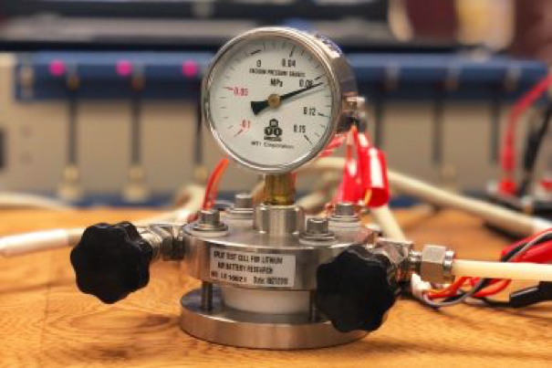
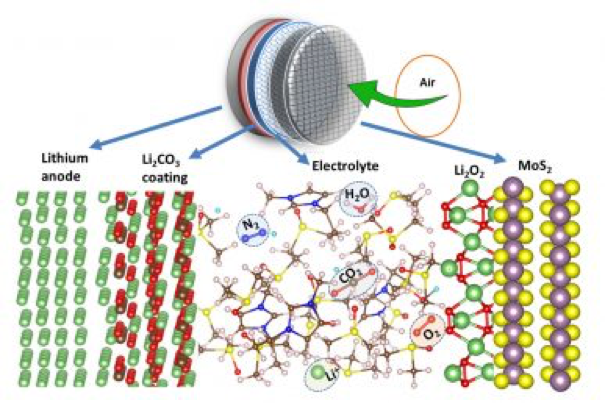

Researchers at the University of Illinois at Chicago and Argonne National Laboratory have developed a new lithium-air battery that is a revolutionary high-powered battery that may replace the universally used lithium-ion battery. The laboratory prototype lithium-air battery
is still functioning after a record breaking 750 charge/discharge cycles. The researchers believe the new lithium-air battery will hold up to 5 times more energy than lithium-ion batteries and could significantly improve power for electric vehicles. The higher energy capacity may lead to greatly improved electric vehicle range, which is a major boost for environmentally friendly electric vehicles.
Lithium-air battery technology has been a topic of research by many research organizations, but most developments to date have failed because of very poor life cycle due to anode oxidation.
The University of Chicago / Argonne laboratory researchers solved this problem by coating the lithium anode with a thin layer of lithium carbonate that selectively allows lithium ions from the anode to enter the electrolyte while preventing unwanted compounds from reaching and degrading the lithium anode. In addition, the researchers also developed a coating for the cathode that minimizes lithium reactions while boosting lithium-air battery efficiency.
Additional technical details can be found here.
Is this a true paradigm changer or a significant process improvement? I think the lithium-air battery is a process improvement that will have significant industrial/commercial impact but in itself it is not a paradigm change as was the initial introduction of lithium batteries.
What do you think?